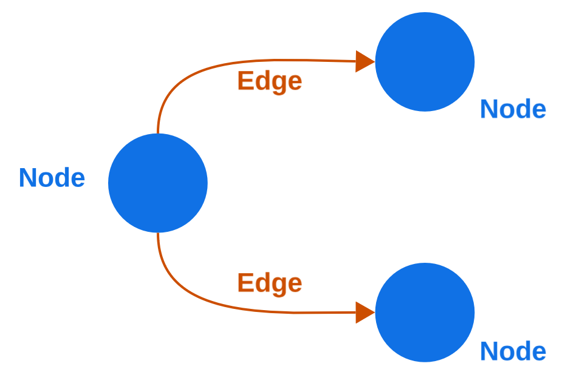
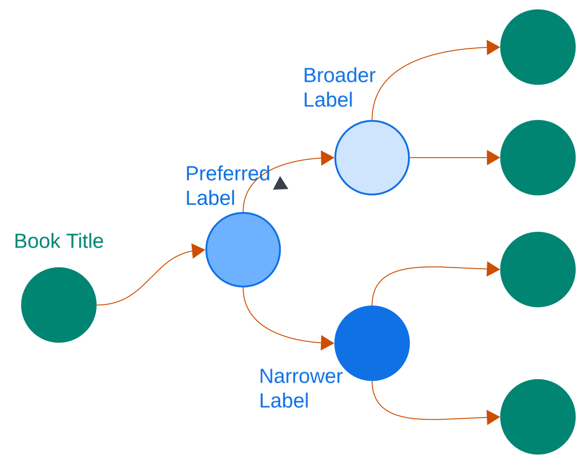

ENABLAR - Lesson 3
16 July 2026 - Pitch
What is a network?

Networked catalogue data

Outline
-
Intro: What is a network (nodes, edges, degree)
- Catalogue data as networks
-
Section 1Construct the graph (code)
- Save as html (code)
-
Section 2Sigma graph with library catalogue metadata
- How to navigate?
-
Section 3Use cases for librarians
Use cases
- Exploring a topic (for research)
- Discovering related titles
- Learning about discipline history
-
Find out about the policy for collecting books and
how a library's collection has grown over time
-
Find out about the different editions of a work